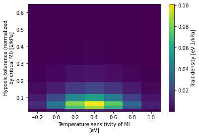

Examine changes in viable habitat
Examine changes in viable habitat¶
%load_ext autoreload
%autoreload 2
import json
import os
import shutil
from itertools import product
import data_collections as dc
import funnel
import intake
import matplotlib.pyplot as plt
import metabolic as mi
import numpy as np
import operators as ops
import util
import xarray as xr
import yaml
/glade/work/mclong/miniconda3/envs/metabolic/lib/python3.7/site-packages/dask_jobqueue/core.py:20: FutureWarning: tmpfile is deprecated and will be removed in a future release. Please use dask.utils.tmpfile instead.
from distributed.utils import tmpfile
curator = util.curator_local_assets()
cat = curator.open_catalog()
ds_ts = cat['trait-space'].to_dask().load()
trait_spc_wgt = ds_ts.trait_spc_active
trait_spc_wgt
<xarray.DataArray 'trait_spc_active' (Ac: 8, Eo: 7)>
array([[1.34680503e-03, 4.47545908e-03, 9.02342586e-03, 1.10384049e-02,
8.19298555e-03, 3.68959807e-03, 1.00813091e-03],
[1.06140909e-02, 3.52708287e-02, 7.11130864e-02, 8.69930173e-02,
6.45684353e-02, 2.90775046e-02, 7.94502019e-03],
[1.23591079e-02, 4.10695540e-02, 8.28044832e-02, 1.01295165e-01,
7.51838542e-02, 3.38580121e-02, 9.25122680e-03],
[7.08526930e-03, 2.35444865e-02, 4.74704214e-02, 5.80708193e-02,
4.31016426e-02, 1.94102305e-02, 5.30357316e-03],
[2.56701395e-03, 8.53023685e-03, 1.71986736e-02, 2.10392290e-02,
1.56158521e-02, 7.03238370e-03, 1.92150019e-03],
[6.36403263e-04, 2.11478032e-03, 4.26382256e-03, 5.21595685e-03,
3.87141615e-03, 1.74343888e-03, 4.76370216e-04],
[1.11418788e-04, 3.70246781e-04, 7.46491996e-04, 9.13187634e-04,
6.77791144e-04, 3.05233896e-04, 8.34008799e-05],
[1.39113912e-05, 4.62278214e-05, 9.32045879e-05, 1.14017669e-04,
8.46268206e-05, 3.81105218e-05, 1.04131654e-05]])
Coordinates:
* Ac (Ac) float64 0.0258 0.0399 0.0619 0.0959 ... 0.2303 0.3568 0.5528
* Eo (Eo) float64 -0.2 -0.0 0.2 0.4 0.6 0.8 1.0
Attributes:
N_traits: 56
long_name: Trait density (active)
metabolic_baseline: active
units: eV 1/kPatrait_spc_wgt.plot();

dEodT_bar = mi.dEodT_bar
dEodT_bar
0.022
catalog_json_file = funnel.to_intake_esm(agg_member_id=True)
sub_spec = dict(
name='drift-corrected',
experiment=['20C', 'RCP85'],
member_id=dc.ocean_bgc_member_ids[:],
)
catalog = funnel.to_intake_esm(agg_member_id=True).search(**sub_spec)
catalog
glade-cesm1-le catalog with 2 dataset(s) from 413 asset(s):
| unique | |
|---|---|
| experiment | 2 |
| component | 1 |
| stream | 1 |
| member_id | 32 |
| variable | 8 |
| name | 1 |
| path | 413 |
catalog.search(experiment='20C', variable=['pO2', 'TEMP'], member_id=10).df
| experiment | component | stream | member_id | variable | name | path | |
|---|---|---|---|---|---|---|---|
| 0 | 20C | ocn | pop.h | 10 | TEMP | drift-corrected | /glade/scratch/mclong/ocean-metabolism/funnel-... |
| 1 | 20C | ocn | pop.h | 10 | pO2 | drift-corrected | /glade/scratch/mclong/ocean-metabolism/funnel-... |
cache_dir = '/glade/scratch/mclong/ocean-metabolism/funnel-cache'
def _gen_cache_file_name(experiment, component, stream, member_id, variable):
return f'{cache_dir}/glade-cesm1-le.{experiment}.{component}.{stream}.{int(member_id):03d}.{variable}.drift-corrected.zarr'
def _make_cache(experiment, component, stream, member_id, variable):
"""
Manually generate funnel catalog entry
I.e.:
asset: /glade/scratch/mclong/ocean-metabolism/funnel-cache/glade-cesm1-le.20C.ocn.pop.h.101.TEMP.drift-corrected.zarr
esm_collection: data/catalogs/glade-cesm1-le.json
key: 20C.ocn.pop.h.101
name: drift-corrected
operator_kwargs:
- {}
- {}
- {}
operators:
- compute_time
- sel_time_slice
- compute_drift_correction
preprocess: _preprocess_pop_h_upper_1km
variable: TEMP
"""
cache_id_dict = dict(
asset=_gen_cache_file_name(experiment, component, stream, member_id, variable),
esm_collection='data/catalogs/glade-cesm1-le.json',
key=f'{experiment}.{component}.{stream}.{member_id}',
name='drift-corrected',
operator_kwargs=[{}, {}, {}],
operators=['compute_time', 'sel_time_slice', 'compute_drift_correction'],
preprocess='_preprocess_pop_h_upper_1km',
variable=variable,
)
cache_id_file = f'data/funnel-catalog/glade-cesm1-le.{experiment}.{component}.{stream}.{int(member_id):03d}.{variable}.drift-corrected.yml'
with open(cache_id_file, 'w') as fid:
yaml.dump(cache_id_dict, fid)
try:
cluster
client
except:
cluster, client = util.get_ClusterClient(memory='64GB')
cluster.scale(200)
client
Client
Client-c1732530-89f2-11ec-8b57-ac1f6bab1e66
| Connection method: Cluster object | Cluster type: dask_jobqueue.PBSCluster |
| Dashboard: https://jupyterhub.hpc.ucar.edu/stable/user/mclong/calcs/proxy/8787/status |
Cluster Info
PBSCluster
2e8d83da
| Dashboard: https://jupyterhub.hpc.ucar.edu/stable/user/mclong/calcs/proxy/8787/status | Workers: 0 |
| Total threads: 0 | Total memory: 0 B |
Scheduler Info
Scheduler
Scheduler-ec1b4c6d-b1fb-46eb-b394-f035d2cc35cd
| Comm: tcp://10.12.205.22:46710 | Workers: 0 |
| Dashboard: https://jupyterhub.hpc.ucar.edu/stable/user/mclong/calcs/proxy/8787/status | Total threads: 0 |
| Started: Just now | Total memory: 0 B |
Workers
# refresh catalog
catalog = funnel.to_intake_esm(agg_member_id=False).search(**sub_spec)
experiment_list = sorted(catalog.unique('experiment')['experiment']['values'])
member_id_list = sorted(catalog.unique('member_id')['member_id']['values'])
clobber = False
stream = 'pop.h'
component = 'ocn'
variable = 'depth_habitat_trait_wgt'
for experiment, member_id in product(experiment_list, member_id_list):
# check for existing cache file
asset = _gen_cache_file_name(experiment, component, stream, member_id, variable)
if clobber and os.path.exists(asset):
print(f'removing: {asset}')
shutil.rmtree(asset)
if os.path.exists(asset):
print(f'exists: {asset}')
continue
with util.timer(f'{experiment}.{member_id}'):
cat = catalog.search(
experiment=experiment,
member_id=member_id,
stream=stream,
component=component,
variable=['TEMP', 'pO2'],
)
# ensure variables
missing_vars = {'TEMP', 'pO2'} - set(cat.df.variable.to_list())
if missing_vars:
print(f'missing vars for {experiment}.{member_id:03d}: {missing_vars}')
continue
dset = cat.to_dataset_dict()
assert len(dset.keys()) == 1
_, ds = dset.popitem()
# compute
print(f'computing: {asset}')
# compute trait-density weighted sum of viable habitat over depth
var_out = xr.full_like(ds.TEMP[:, 0, :, :], fill_value=0.0)
dso = ds[['TAREA', 'KMT', 'TLONG', 'TLAT', 'KMT', 'z_t', 'dz']]
for Eo, Ac in product(trait_spc_wgt.Eo.values, trait_spc_wgt.Ac.values):
# get the trait weighting for this trait
trait_wgt_ij = trait_spc_wgt.sel(Eo=Eo, Ac=Ac).values
# compute the metabolic index
Phi = mi.Phi(ds.pO2, ds.TEMP, Ac, Eo, dEodT=dEodT_bar)
# compute the vertical integral of habitat volume where Φ > 1
# multiplied by trait space weighting
viable_trait_mask = xr.where(Phi > 1, trait_wgt_ij, 0.0)
# add this "viable depth" to total depth
var_out += (ds.dz * viable_trait_mask).sum('z_t')
print(f'writing: {asset}')
var_out.name = variable
var_out.attrs['long_name'] = 'Trait-space weighted vertical habitat'
var_out.attrs['units'] = ' '.join([ds.z_t.attrs['units'], trait_spc_wgt.attrs['units']])
dso[variable] = var_out
dso.to_zarr(asset, mode='w', consolidated=True)
_make_cache(experiment, component, stream, member_id, variable)
exists: /glade/scratch/mclong/ocean-metabolism/funnel-cache/glade-cesm1-le.20C.ocn.pop.h.002.depth_habitat_trait_wgt.drift-corrected.zarr
exists: /glade/scratch/mclong/ocean-metabolism/funnel-cache/glade-cesm1-le.20C.ocn.pop.h.009.depth_habitat_trait_wgt.drift-corrected.zarr
exists: /glade/scratch/mclong/ocean-metabolism/funnel-cache/glade-cesm1-le.20C.ocn.pop.h.010.depth_habitat_trait_wgt.drift-corrected.zarr
exists: /glade/scratch/mclong/ocean-metabolism/funnel-cache/glade-cesm1-le.20C.ocn.pop.h.011.depth_habitat_trait_wgt.drift-corrected.zarr
exists: /glade/scratch/mclong/ocean-metabolism/funnel-cache/glade-cesm1-le.20C.ocn.pop.h.012.depth_habitat_trait_wgt.drift-corrected.zarr
exists: /glade/scratch/mclong/ocean-metabolism/funnel-cache/glade-cesm1-le.20C.ocn.pop.h.013.depth_habitat_trait_wgt.drift-corrected.zarr
exists: /glade/scratch/mclong/ocean-metabolism/funnel-cache/glade-cesm1-le.20C.ocn.pop.h.014.depth_habitat_trait_wgt.drift-corrected.zarr
exists: /glade/scratch/mclong/ocean-metabolism/funnel-cache/glade-cesm1-le.20C.ocn.pop.h.015.depth_habitat_trait_wgt.drift-corrected.zarr
exists: /glade/scratch/mclong/ocean-metabolism/funnel-cache/glade-cesm1-le.20C.ocn.pop.h.016.depth_habitat_trait_wgt.drift-corrected.zarr
exists: /glade/scratch/mclong/ocean-metabolism/funnel-cache/glade-cesm1-le.20C.ocn.pop.h.017.depth_habitat_trait_wgt.drift-corrected.zarr
exists: /glade/scratch/mclong/ocean-metabolism/funnel-cache/glade-cesm1-le.20C.ocn.pop.h.018.depth_habitat_trait_wgt.drift-corrected.zarr
exists: /glade/scratch/mclong/ocean-metabolism/funnel-cache/glade-cesm1-le.20C.ocn.pop.h.019.depth_habitat_trait_wgt.drift-corrected.zarr
exists: /glade/scratch/mclong/ocean-metabolism/funnel-cache/glade-cesm1-le.20C.ocn.pop.h.020.depth_habitat_trait_wgt.drift-corrected.zarr
exists: /glade/scratch/mclong/ocean-metabolism/funnel-cache/glade-cesm1-le.20C.ocn.pop.h.021.depth_habitat_trait_wgt.drift-corrected.zarr
exists: /glade/scratch/mclong/ocean-metabolism/funnel-cache/glade-cesm1-le.20C.ocn.pop.h.022.depth_habitat_trait_wgt.drift-corrected.zarr
exists: /glade/scratch/mclong/ocean-metabolism/funnel-cache/glade-cesm1-le.20C.ocn.pop.h.023.depth_habitat_trait_wgt.drift-corrected.zarr
exists: /glade/scratch/mclong/ocean-metabolism/funnel-cache/glade-cesm1-le.20C.ocn.pop.h.024.depth_habitat_trait_wgt.drift-corrected.zarr
exists: /glade/scratch/mclong/ocean-metabolism/funnel-cache/glade-cesm1-le.20C.ocn.pop.h.025.depth_habitat_trait_wgt.drift-corrected.zarr
exists: /glade/scratch/mclong/ocean-metabolism/funnel-cache/glade-cesm1-le.20C.ocn.pop.h.026.depth_habitat_trait_wgt.drift-corrected.zarr
exists: /glade/scratch/mclong/ocean-metabolism/funnel-cache/glade-cesm1-le.20C.ocn.pop.h.027.depth_habitat_trait_wgt.drift-corrected.zarr
exists: /glade/scratch/mclong/ocean-metabolism/funnel-cache/glade-cesm1-le.20C.ocn.pop.h.028.depth_habitat_trait_wgt.drift-corrected.zarr
exists: /glade/scratch/mclong/ocean-metabolism/funnel-cache/glade-cesm1-le.20C.ocn.pop.h.029.depth_habitat_trait_wgt.drift-corrected.zarr
exists: /glade/scratch/mclong/ocean-metabolism/funnel-cache/glade-cesm1-le.20C.ocn.pop.h.030.depth_habitat_trait_wgt.drift-corrected.zarr
exists: /glade/scratch/mclong/ocean-metabolism/funnel-cache/glade-cesm1-le.20C.ocn.pop.h.031.depth_habitat_trait_wgt.drift-corrected.zarr
exists: /glade/scratch/mclong/ocean-metabolism/funnel-cache/glade-cesm1-le.20C.ocn.pop.h.032.depth_habitat_trait_wgt.drift-corrected.zarr
exists: /glade/scratch/mclong/ocean-metabolism/funnel-cache/glade-cesm1-le.20C.ocn.pop.h.034.depth_habitat_trait_wgt.drift-corrected.zarr
exists: /glade/scratch/mclong/ocean-metabolism/funnel-cache/glade-cesm1-le.20C.ocn.pop.h.035.depth_habitat_trait_wgt.drift-corrected.zarr
exists: /glade/scratch/mclong/ocean-metabolism/funnel-cache/glade-cesm1-le.20C.ocn.pop.h.101.depth_habitat_trait_wgt.drift-corrected.zarr
exists: /glade/scratch/mclong/ocean-metabolism/funnel-cache/glade-cesm1-le.20C.ocn.pop.h.102.depth_habitat_trait_wgt.drift-corrected.zarr
exists: /glade/scratch/mclong/ocean-metabolism/funnel-cache/glade-cesm1-le.20C.ocn.pop.h.103.depth_habitat_trait_wgt.drift-corrected.zarr
exists: /glade/scratch/mclong/ocean-metabolism/funnel-cache/glade-cesm1-le.20C.ocn.pop.h.104.depth_habitat_trait_wgt.drift-corrected.zarr
exists: /glade/scratch/mclong/ocean-metabolism/funnel-cache/glade-cesm1-le.20C.ocn.pop.h.105.depth_habitat_trait_wgt.drift-corrected.zarr
exists: /glade/scratch/mclong/ocean-metabolism/funnel-cache/glade-cesm1-le.RCP85.ocn.pop.h.002.depth_habitat_trait_wgt.drift-corrected.zarr
exists: /glade/scratch/mclong/ocean-metabolism/funnel-cache/glade-cesm1-le.RCP85.ocn.pop.h.009.depth_habitat_trait_wgt.drift-corrected.zarr
exists: /glade/scratch/mclong/ocean-metabolism/funnel-cache/glade-cesm1-le.RCP85.ocn.pop.h.010.depth_habitat_trait_wgt.drift-corrected.zarr
exists: /glade/scratch/mclong/ocean-metabolism/funnel-cache/glade-cesm1-le.RCP85.ocn.pop.h.011.depth_habitat_trait_wgt.drift-corrected.zarr
exists: /glade/scratch/mclong/ocean-metabolism/funnel-cache/glade-cesm1-le.RCP85.ocn.pop.h.012.depth_habitat_trait_wgt.drift-corrected.zarr
exists: /glade/scratch/mclong/ocean-metabolism/funnel-cache/glade-cesm1-le.RCP85.ocn.pop.h.013.depth_habitat_trait_wgt.drift-corrected.zarr
exists: /glade/scratch/mclong/ocean-metabolism/funnel-cache/glade-cesm1-le.RCP85.ocn.pop.h.014.depth_habitat_trait_wgt.drift-corrected.zarr
exists: /glade/scratch/mclong/ocean-metabolism/funnel-cache/glade-cesm1-le.RCP85.ocn.pop.h.015.depth_habitat_trait_wgt.drift-corrected.zarr
exists: /glade/scratch/mclong/ocean-metabolism/funnel-cache/glade-cesm1-le.RCP85.ocn.pop.h.016.depth_habitat_trait_wgt.drift-corrected.zarr
exists: /glade/scratch/mclong/ocean-metabolism/funnel-cache/glade-cesm1-le.RCP85.ocn.pop.h.017.depth_habitat_trait_wgt.drift-corrected.zarr
exists: /glade/scratch/mclong/ocean-metabolism/funnel-cache/glade-cesm1-le.RCP85.ocn.pop.h.018.depth_habitat_trait_wgt.drift-corrected.zarr
exists: /glade/scratch/mclong/ocean-metabolism/funnel-cache/glade-cesm1-le.RCP85.ocn.pop.h.019.depth_habitat_trait_wgt.drift-corrected.zarr
exists: /glade/scratch/mclong/ocean-metabolism/funnel-cache/glade-cesm1-le.RCP85.ocn.pop.h.020.depth_habitat_trait_wgt.drift-corrected.zarr
exists: /glade/scratch/mclong/ocean-metabolism/funnel-cache/glade-cesm1-le.RCP85.ocn.pop.h.021.depth_habitat_trait_wgt.drift-corrected.zarr
exists: /glade/scratch/mclong/ocean-metabolism/funnel-cache/glade-cesm1-le.RCP85.ocn.pop.h.022.depth_habitat_trait_wgt.drift-corrected.zarr
exists: /glade/scratch/mclong/ocean-metabolism/funnel-cache/glade-cesm1-le.RCP85.ocn.pop.h.023.depth_habitat_trait_wgt.drift-corrected.zarr
exists: /glade/scratch/mclong/ocean-metabolism/funnel-cache/glade-cesm1-le.RCP85.ocn.pop.h.024.depth_habitat_trait_wgt.drift-corrected.zarr
exists: /glade/scratch/mclong/ocean-metabolism/funnel-cache/glade-cesm1-le.RCP85.ocn.pop.h.025.depth_habitat_trait_wgt.drift-corrected.zarr
exists: /glade/scratch/mclong/ocean-metabolism/funnel-cache/glade-cesm1-le.RCP85.ocn.pop.h.026.depth_habitat_trait_wgt.drift-corrected.zarr
exists: /glade/scratch/mclong/ocean-metabolism/funnel-cache/glade-cesm1-le.RCP85.ocn.pop.h.027.depth_habitat_trait_wgt.drift-corrected.zarr
exists: /glade/scratch/mclong/ocean-metabolism/funnel-cache/glade-cesm1-le.RCP85.ocn.pop.h.028.depth_habitat_trait_wgt.drift-corrected.zarr
exists: /glade/scratch/mclong/ocean-metabolism/funnel-cache/glade-cesm1-le.RCP85.ocn.pop.h.029.depth_habitat_trait_wgt.drift-corrected.zarr
exists: /glade/scratch/mclong/ocean-metabolism/funnel-cache/glade-cesm1-le.RCP85.ocn.pop.h.030.depth_habitat_trait_wgt.drift-corrected.zarr
exists: /glade/scratch/mclong/ocean-metabolism/funnel-cache/glade-cesm1-le.RCP85.ocn.pop.h.031.depth_habitat_trait_wgt.drift-corrected.zarr
exists: /glade/scratch/mclong/ocean-metabolism/funnel-cache/glade-cesm1-le.RCP85.ocn.pop.h.032.depth_habitat_trait_wgt.drift-corrected.zarr
exists: /glade/scratch/mclong/ocean-metabolism/funnel-cache/glade-cesm1-le.RCP85.ocn.pop.h.034.depth_habitat_trait_wgt.drift-corrected.zarr
exists: /glade/scratch/mclong/ocean-metabolism/funnel-cache/glade-cesm1-le.RCP85.ocn.pop.h.035.depth_habitat_trait_wgt.drift-corrected.zarr
exists: /glade/scratch/mclong/ocean-metabolism/funnel-cache/glade-cesm1-le.RCP85.ocn.pop.h.101.depth_habitat_trait_wgt.drift-corrected.zarr
exists: /glade/scratch/mclong/ocean-metabolism/funnel-cache/glade-cesm1-le.RCP85.ocn.pop.h.102.depth_habitat_trait_wgt.drift-corrected.zarr
exists: /glade/scratch/mclong/ocean-metabolism/funnel-cache/glade-cesm1-le.RCP85.ocn.pop.h.103.depth_habitat_trait_wgt.drift-corrected.zarr
exists: /glade/scratch/mclong/ocean-metabolism/funnel-cache/glade-cesm1-le.RCP85.ocn.pop.h.104.depth_habitat_trait_wgt.drift-corrected.zarr
exists: /glade/scratch/mclong/ocean-metabolism/funnel-cache/glade-cesm1-le.RCP85.ocn.pop.h.105.depth_habitat_trait_wgt.drift-corrected.zarr
del client
del cluster